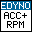
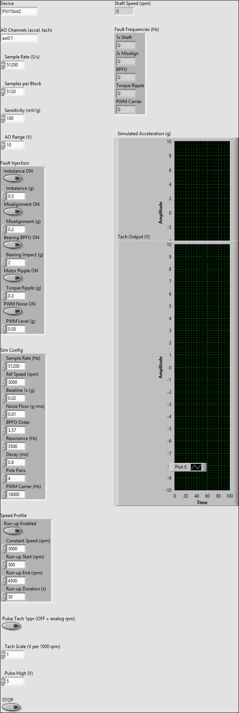
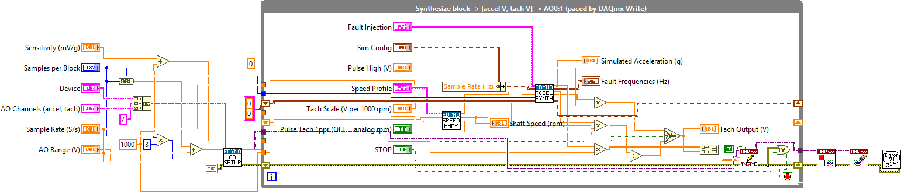

eDyno NVH simulator for ORDER ANALYSIS - PXIe-4468 AO0 + AO1 in ONE task (the 4468 AO channels share one timing engine, so they cannot run as two separate tasks).
AO0 = accelerometer: PCB 356A15 (one axis) at Sensitivity mV/g, with the same speed profile and Fault Injection as eDyno NVH Accel Simulator.vi.
AO1 = motor-shaft speed reference, phase-locked to AO0 (same shaft phase, same samples):
- Pulse Tach OFF (default): analog voltage proportional to rpm, Tach Scale V per 1000 rpm (default 1 V/1000 rpm, so 4500 rpm = 4.5 V).
- Pulse Tach ON: once-per-rev square wave, 0 / Pulse High V (default 5 V), 50 % duty, rising edge at shaft angle 0 - a keyphasor for SVT tach-to-speed conversion (1 pulse/rev).
Acquire in a separate VI: AO0 -> an accel AI channel (IEPE OFF, same mV/g), AO1 -> a voltage AI channel (IEPE OFF), both in one AI task so they share the sample clock. Analog mode: rpm = V x 1000 / Tach Scale. Orders are referred to the MOTOR shaft (1x = rpm/60 Hz). Fault Frequencies is the answer key at the current speed.
Defaults: run-up 500 -> 4500 rpm over 30 s (Speed Profile / Run-up Enabled), or constant 3000 rpm. Timing: 3-block AO buffer, DAQmx Write paces the loop, the first write auto-starts the task.


